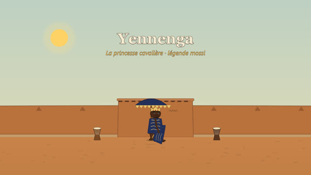
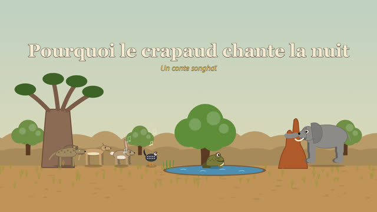

Version animée
Les films sont joués en direct dans le navigateur (SVG + GSAP) : lecture, pause, avance image par image, menu des scènes. Textes à l'écran traduisibles.

Version vidéo
Les mêmes films en vidéo MP4 (1920 × 1080, 25 images/s), à regarder ou à télécharger pour une projection ou un doublage.
À propos
Chaque film dure environ 4 à 6 minutes. Ils sont muets : seuls le titre, la présentation des lieux et des personnages et le générique sont écrits, pour pouvoir être traduits ou doublés dans les langues nationales.
Les contes et légendes sont des adaptations libres : quand le récit publié n'était pas accessible, l'histoire a été imaginée à partir de la tradition orale. Les récits historiques sont simplifiés. Tout est à vérifier auprès des conteurs et des historiens ; les sources sont citées dans chaque générique.